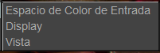

The OCIO Menu

El menu de OCIO te permite controlar la imagen y el display de un flujo de trabajo de OpenColorIO.
El Espacio de Color de Entrada es un seteo por imagen que te permite establecer el espacio de color de la imagen. Para cineon y dpx, por defecto es una transformación logarítmica, mientras que para las otras imagenes es una transformación de escena lineal.
The Display option te permite setear el Display de OpenColorIO. Normalmente, esta es una sola opción, como ACES.
Finalmente, la opción de Vista permite cambiar los controles de visión del monitor. Como tal, la vista más común es sRGB.